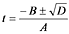
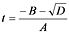

課題０２で作成したプログラムにおいて， 交点が見つかった場合に単色で塗りつぶす代わりに， 簡単な陰影を付けてみたいと思います．
まず，関数 trace() において求めた A，B，D を用いて，t を求めます．

物体が球であれば，t はひとつないしふたつ求まります． ひとつの場合は視線が球に接していることになるので， ここでは２つの実根が得られた場合について考えます． 視点から見えるのは，２つの交点のうち手前の方， すなわち，t の小さい方です．

この小さい方の t を使って交点の位置 P(t) を計算する処理を，trace() に追加してください． これは，課題０２で求めた視線の方程式に，この t を代入すれば得られます． ただし t < 0 の場合は， 交点が視点の背後にあることになるので， 視線は球と交差しないことになります．
次に，この交点の位置における物体表面の法線単位ベクトル N を計算する処理を，プログラムに追加してください． 物体が球であれば， これは球の中心からその点に向かうベクトルを正規化したものになります．
そして，交点が見つかったときに白い点を打つ代わりに， この N の Z 成分を関数 trace() の引数 col の全ての要素に代入してください． このとき，N の Z 成分が負なら光が当っていないので， その場合は col の全ての要素を 0（黒）にする必要があります．
視点の方向から平行光による照明を行う場合， 照明される点から見たこの光源の方向単位ベクトル（光線ベクトル） L は，次のようになります．
L = (0, 0, -1)
ある点における入射光の密度は， その点の法線単位ベクトルと光線ベクトルの内積に比例します（Lambert の法則）．法線単位ベクトル N を
N = (nx, ny, nz)
とすれば，この光線による入射光の密度は，
N・L = -nz
となります．
物体表面が完全拡散反射面だとすれば， 物体表面の明度は視点の位置に依存しないので， 明度は入射光の密度に比例します．